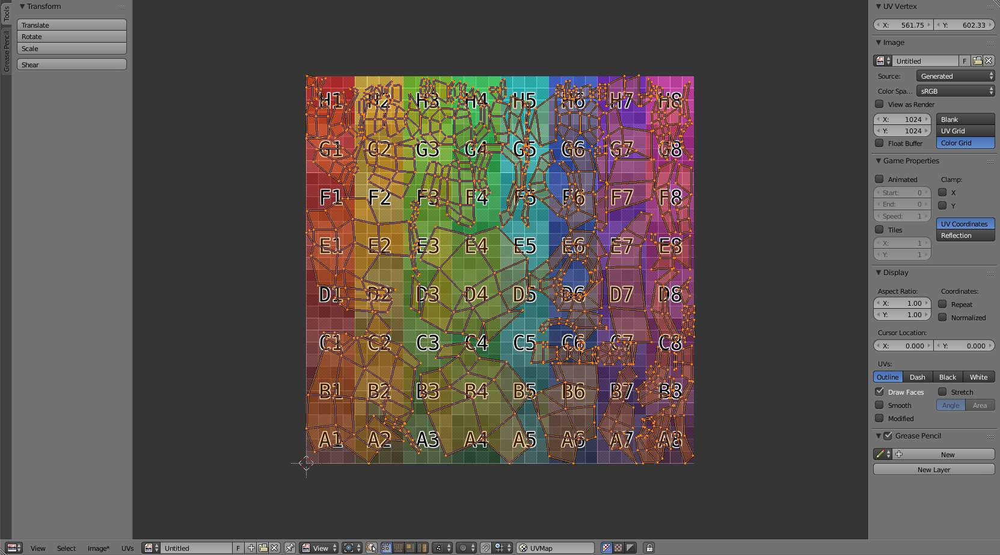

简介¶
The UV/图像编辑器 is where you will be editing the UVs. This is an overview of the tools found there. Using the UV editor is explained more in depth in the next sections.

UV/图像编辑器 for texturing.
Header Region¶
UV/图像编辑器 Header.
The header bar contains several menus and options for working with UVs
- View Menu
- Tools for, working with the editor and controlling how things are displayed. The properties panel has display options and manipulation tools.
- Select Menu
- Tools for Selecting UV’s
- 图像 Menu
- This contains options for when Working with 图像s
- UVs Menu
- Contains tools for Unwrapping 网格 and Editing UV’s.
- 图像 Selector Menu
- Select the image to apply when Working with 图像s.
- Pin 图像
- Displays current image regardless of selected object.
- 轴心点 Selector
- Similar to working with 轴心点s in the 3D视图.
- Sync Selection
- Keeps UV and Mesh component selections in sync.
- Selection Modes:
- Vertex
- Edge
- Face
- Island
- Sticky Selection Mode
- When Sync Selection is disabled, these options control how UVs are selected.
- Proportional Editing
- See Proportional Editing.
- UV Snapping
- Similar to Snapping in the 3D视图
- Active UV Texture Map Selector
- Select which UV texture to use
- 图像 Channels to Draw
- Set the image to be displayed with Color, Color and Alpha, or just Alpha.
- Auto Update 其他 Affected Windows
- Update other affected windows automatically to reflect changes during interactive operations e.g. transfom.
Properties Panel¶
图像编辑器 Properties Panel.
- UV Vertex
- 变换 Properties Selecting UV’s.
- Grease Pencil
- See the Grease Pencil Docs.
- 图像
- Contains the properties of the current 图像.
- Display
- Controls display options for UVs and additional settings for when Working with 图像s.
Display Options¶
You can set how UVs are displayed in the Display Panel:
- Aspect Ratio
- Display Aspect for this image. Does not affect rendering.
- Coordinates
Display UV coordinates
- Repeat
- Draw the image repeated outside of the main view.
- Normalized
- Display UV coordinates from 0.0 to 1.0 rather than in pixels
- Cursor Location
- 2D cursor location for this view
- Outline/Dash/Black/White
- Sets how UV edges are displayed
- Draw Faces
- Draw faces over the image
- Smooth
- Makes edges appeared Antialiased
- Modified
- Show results of modifiers in the UV display
- Stretch
- Shows how much of a difference there is between UV coordinates and 3D coordinates. Blue means low distortion, while Red means high distortion. Choose to display the distortion of Angles or the Area.